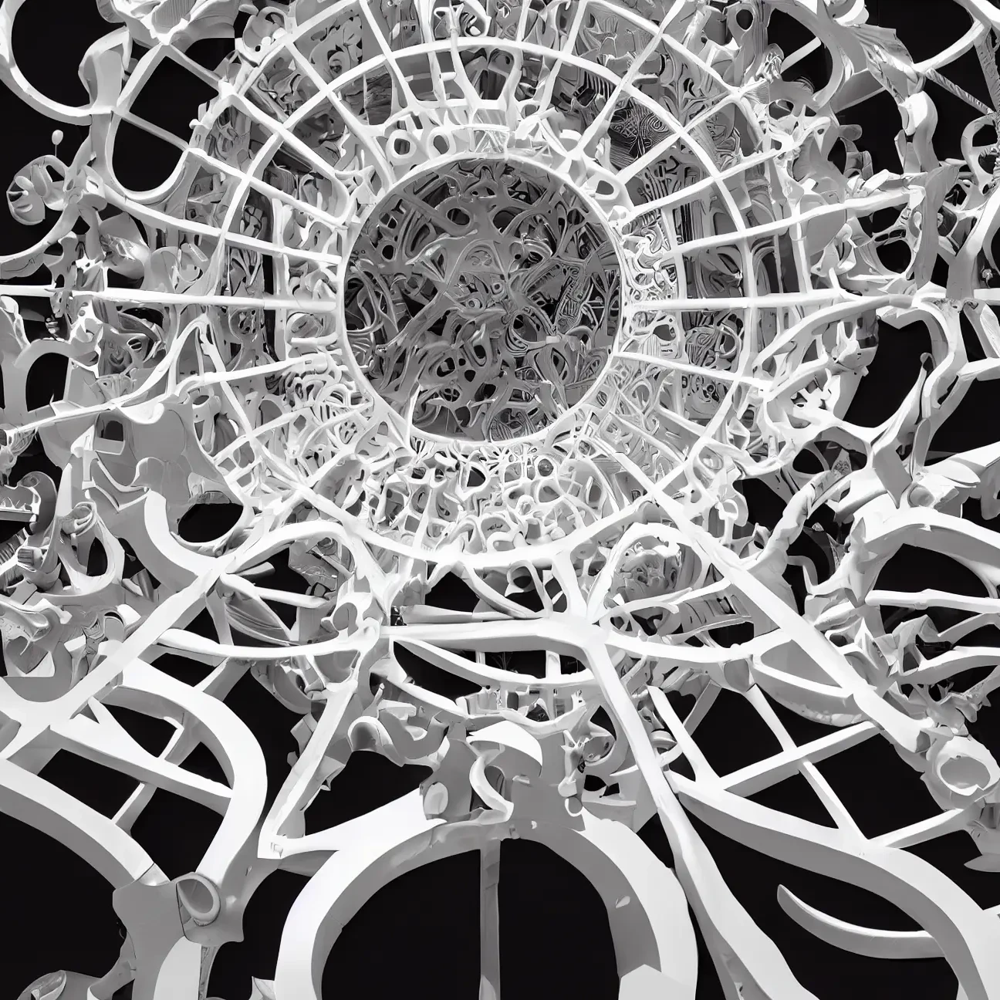
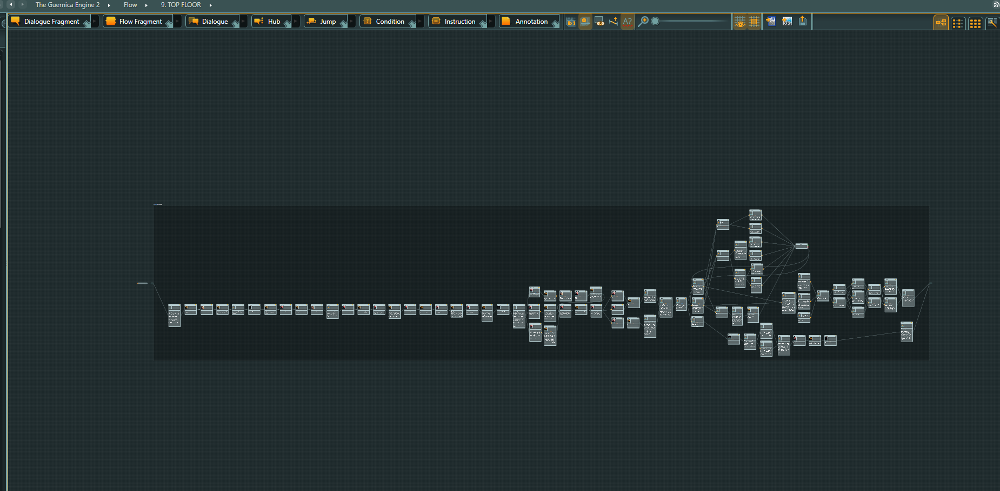
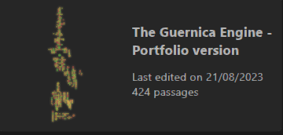

The Guernica Engine

Genre:- Dystopia, Cosmic Horror, Fantasy, Mystery, Visual Novel
Employer:- Nedi Games
Role:- Narrative Designer
Main Responsibilities
- Pitched, Envisioned and wrote multiple different worlds and story Ideas for the client, to create a visual novel mobile game (TBA) within an interesting Fantasy world.
- Created the main world, history, and lore for the game.
- Created the characters and an outline for the story.
- Planned and created a branching path narrative that incorporated the themes of the story.
- Used twine and Articy draft to create one among many prototypes.
- Refactored the story and ported the prototypes for a different platform.

Work Summary
I was tasked by the client Nedi games to create a Visual Novel mobile game (TBA) with Fantasy and intrigue elements in mind. Since I was given full creative reigns on the project and was tasked with creating a completely new IP from scratch, I started by finding themes that I wanted to permeate through the game. For inspiration, I chose specific works of Zdzisław Beksiński and Picasso ( Guernica painting ) that spoke to me about despair and control. I used these themes to construct a dead post-apocalyptic world with an abhorrently bleak outlook on life by writing lore for the world and creating the set pieces I would use for the game. Then I outlined the story, keeping the arc of the main character and the secondary characters in line with the themes laid out.
Since this is Interactive fiction, I wrote the story to incorporate multiple different endings and different outcomes for the characters, while maintaining the different outlooks on the theme. resources, time and client requirements.

After finishing all the prep work, I executed the story and created multiple drafts of the game prototype using miro, twine and articy draft.
After multiple rounds of editing, I delivered the prototypes to the client for further development. I learnt a lot through this project, especially how to maintain quality consistency for a given limited time.